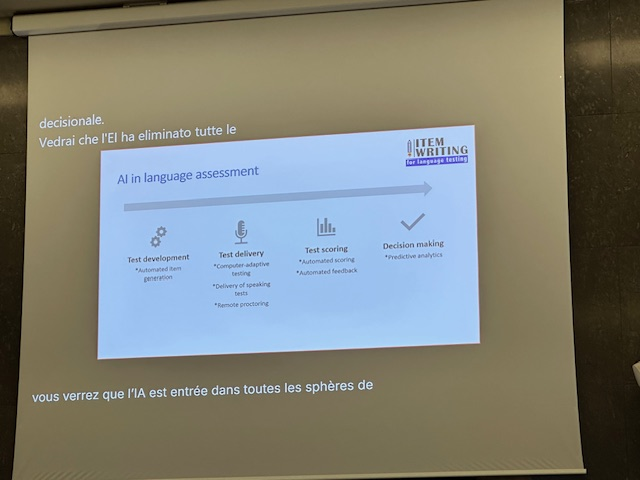

Four Stages of AI Integration
AI is being integrated across the entire language assessment workflow:
- Test Development: Automated item generation for reading, listening, and writing assessments
- Test Delivery: Computer-adaptive testing, remote proctoring, and speaking test delivery
- Test Scoring: Automated scoring with immediate feedback
- Decision Making: Predictive analytics for learner outcomes
